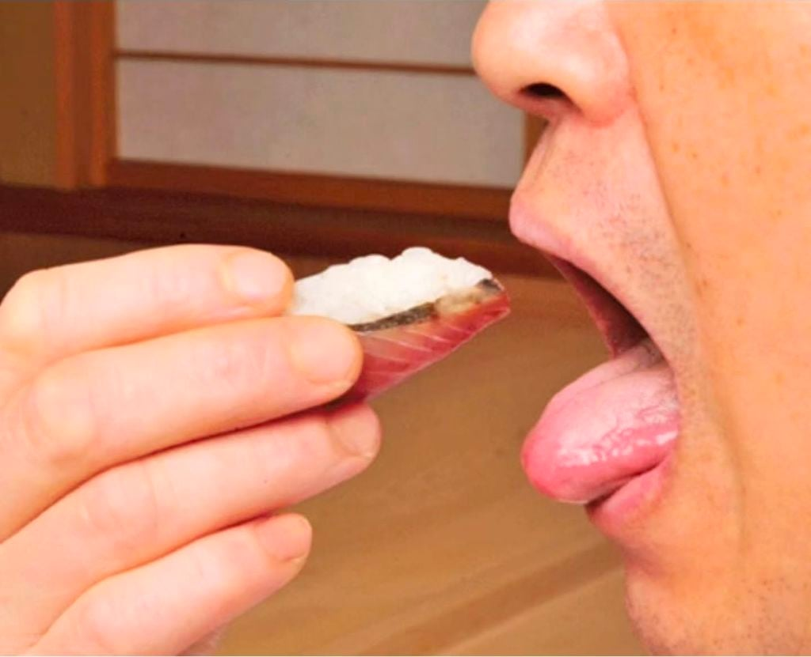

진짜 정신적인 피로감 없음?
행동하나하나 이렇게 점수 매기듯이 사는거 예를 들면 귀에 대한 소음도 인지로부터 시작함
전엔 안들렸거든 집들이를 하고 손님중 하나가 너 안시끄러워?? 윗집 장난 아니다
어? 그때부터 조금씩 신경쓰이고 백색소음이던 소리가 인지되고 소음으로 바뀜
왜 살면서 스스로 불편한걸 하나씩 추가해서 예민한 사람이 되려는 걸까
전엔 누가 혀내밀고 음식을 먹든 그냥 먹는구나 생각했는데
누군가가 얘 이상하게 먹는다 ㅋㅋ 왜 저렇게 먹음?? 존나 특이하네
그때부터 얘도 혀나오네? 시간지나면 식사예절이랍시고 밥먹을 때 혀나오는 사람
상스러운 식사예절로 바뀌고 강제 주입하고 다닐지도 모름
이런게 전부 스스로 예민하게 만드는 건데 까다롭고 인내심 사라지고
보기싫으니깐 그러지
본인 얼굴은 어케 참는건지 모르겠음 ㅋㅋ 어차피 불편한새끼들 인터넷 지박령이라 좆같이 등 굽은새끼들이나 지하철에서 핸드폰하면서 걷는 새끼들중 하나일건데 ㅋㅋ
내친구 별명이 그래서 성큰임ㅋㅋ
밑짤 2개만 좇같은 거 보니 예쁘면 괜찮은듯
입작으면 흘릴까봐 저렇게 먹게되는듯
내가 안그래서
입주변에 다뭍히는건가